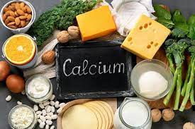

kalsiyum gümüş gibi parlaktır. Özgül ağırlığı 1,55 g/cm³tür. 851 °C’de erir. 1439 °C’de kaynar.Vücudumuzda makro yapıda bulunur
Elektriği iyi iletir. Gevrek (kırılgan) olmasına rağmen yumuşaktır.
Sertliği sodyum ile alüminyum arasındadır. Haddelenebilir ve dövülebilir.
Çekme mukâvemeti 438 kg/cm²dir. Oksidasyon değeri 2+’dır. Atom numarası 20, atom ağırlığı 40,078’dir.
Oksidasyon değeri 2+’dır. Atom numarası 20, atom ağırlığı 40,078’dir. Yeryüzünde altı bağımlı izotopu bulunmaktadır: Ca40, Ca42, Ca44, Ca46 ve Ca48. Dünya üzerindeki kalsiyum elementinin % 97’si Ca40 izotopudur
geri dön
